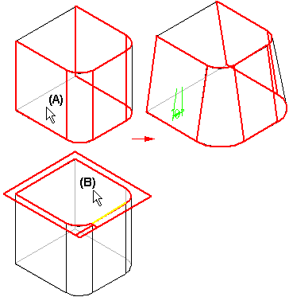

Defining the draft plane
The angle of a draft feature is measured against the normal of a draft plane you define. Ideally, the draft plane should be perpendicular to the faces that you want to draft.
For example, to add a draft angle to the four vertical faces (A), you can select the top face (B) as the draft plane, since this face is perpendicular to the faces you want to draft.

For a simple drafted feature, the faces you want to draft are pivoted about the draft plane. For more complex drafted features, the faces you want to draft can be pivoted about a part edge, parting line, or parting surface.
How do I
Add a draft angle to a partExamples: Constructing drafts to different sides
Examples: Selecting draft faces with the chain method
Examples: Selecting draft faces with the loop sides method
Learn more
Adding draft to partsWorkflow overview
Editing add draft features
Using parting geometry
Split draft
Step draft
Things to consider with rounds and draft angles
Look up more details
Add Draft commandAdd Draft command bar
Add Draft command bar
Add Draft command bar
Draft Options dialog box
Draft Parameters dialog box
Example: Draft Options